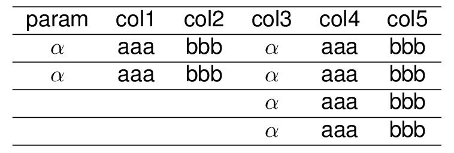
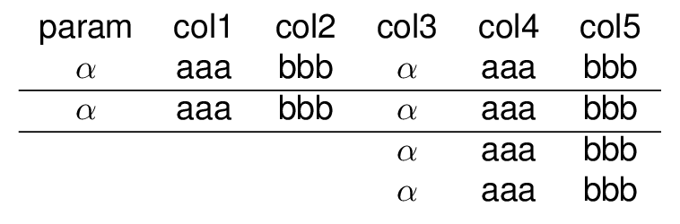
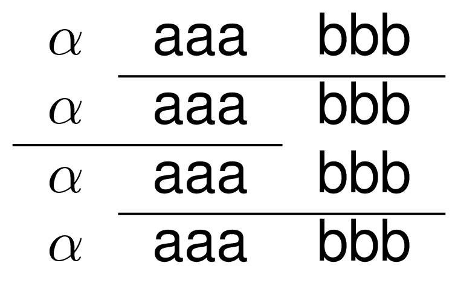
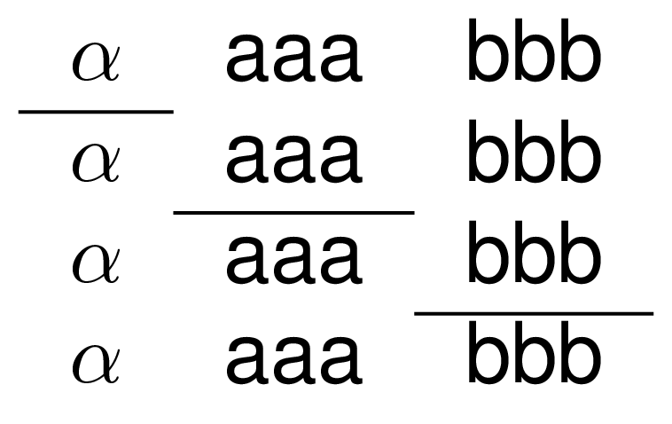
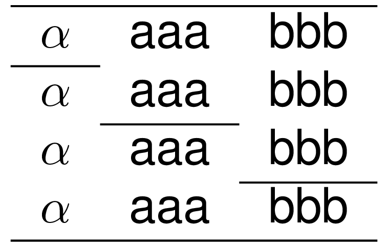

x1 <- x + y + z
x2 <- x1 / x1 # 2x3 object
x3 <- x2 / x2 # 4x3 object
k1 <- lapply(1:3,as.tb)
k2 <- lapply(4:6,as.tb)
k <- purrr::reduce(k1,`+`) / purrr::reduce(k2,`+`)
title <- c('param',sprintf('col%s',1:5))%>%
purrr::map(as.tb)%>%
purrr::reduce(`+`)Add hlines into the table using hline.
hline expects the lines to add hline to, where 0 is a possible value for lines which a line will be added to the top of the table. When lines are left empty then all the lines will have hline attached to them.


Add clines into the table using hline.
Define where to put in the clines with a spec object. The spec can be either a list or data.frame either of which containing the elements line,i,j, where line is the line to apply the cline, i,j is the starting end ending columns respectivley.
cline expects the lines to add hline to, where 0 is a possible value for lines which a line will be added to the top of the table.
l <- list(c(line=1,i=2,j=3),c(line=2,i=1,j=2),c(line=3,i=2,j=3))
d <- data.frame(line=1:3,i=c(1,2,3),j=c(1,2,3))

you can also combine hline and cline in a pipe
